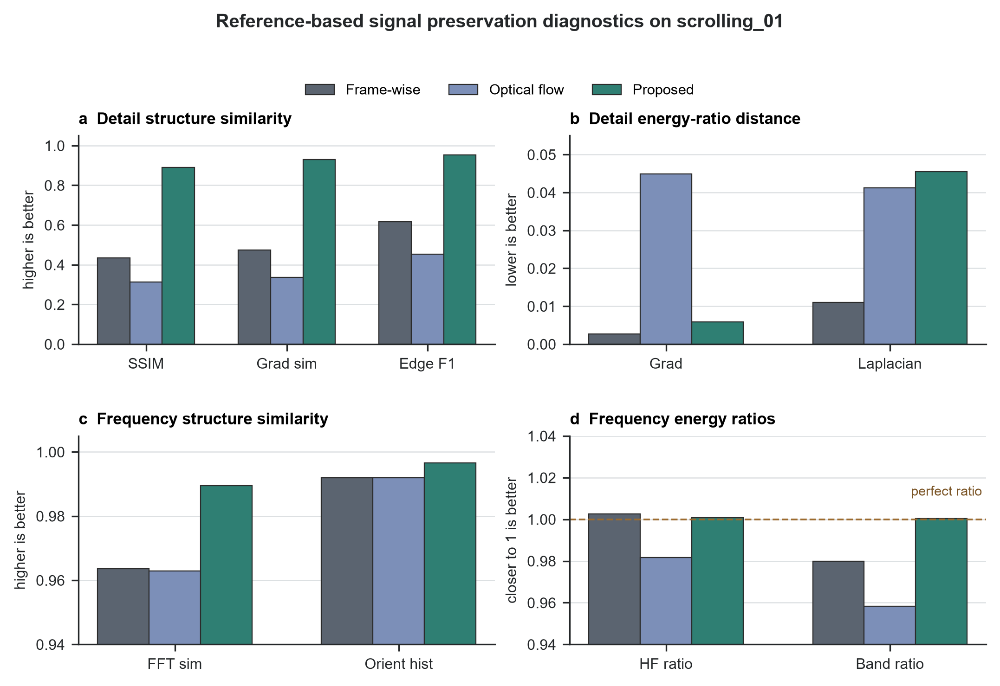

Captured-screen videos preserve screen content when direct recording is unavailable, but the camera view also contains perspective distortion, hand motion, background clutter, weak monitor borders, and content that can move independently inside the display. This paper studies geometric screen-plane normalization for such videos. We present a border-guided method that treats the physical screen boundary as the primary cue for the homography: it predicts border search bands, recovers four screen-edge lines from local image evidence, intersects them into a quadrilateral, checks geometric plausibility and LK/RANSAC consistency, and renders each frame to a frontal screen canvas. On an annotated ten-clip evaluation split spanning five capture conditions, the method reaches a median corner RMSE of 3.87 px, median quadrilateral IoU of 0.996, and median frame-to-frame translation variation of 2.45 px/frame. The results show that using the physical border as the dominant cue avoids the main failure mode of content-driven tracking, especially on scrolling pages and weak-border scenes.
Keywords: screen rectification; captured-screen video; homography; border detection; optical flow; video stabilization
Captured-screen video is a practical substitute for direct screen recording in classrooms, demonstrations, meetings, and device-output capture. A handheld camera view, however, is not a clean screen image. It includes perspective distortion, camera shake, changing exposure, glare, background regions, and partial visibility of the display frame. Before downstream reading or restoration can be reliable, the physical screen plane must be estimated and normalized.
The central difficulty is that displayed content and the physical screen do not share the same motion. Text, web pages, and videos can move inside the screen while the display itself only moves because of the camera. A tracker that follows internal content can therefore estimate a stable but wrong screen plane. Conversely, independent frame-level detection can recover from content motion but may introduce jitter or fail when borders are weak.
Our method makes the physical border, not internal texture, the primary evidence for screen-plane estimation. Starting from an initial four-corner screen annotation or detector result, each new frame searches near the predicted screen sides, fits four edge lines, and forms the current quadrilateral from their intersections. Sparse LK/RANSAC tracking is still computed, but it is used to diagnose disagreement between internal content motion and the border estimate rather than to replace the border-driven homography when boundary evidence is valid.
This paper makes three contributions. First, it gives a focused geometric normalization pipeline for captured-screen videos in which boundary evidence drives the screen-plane trajectory. Second, it defines a reproducible evaluation using corner annotations, geometry metrics, and trajectory metrics across five capture conditions. Third, it shows that the border-guided method improves annotated geometry while remaining temporally stable, with the largest gains on scrolling and weak-border clips.
Planar document and screen rectification use the projective relation between a camera and a planar surface. Camera-based document analysis has used page borders, layout cues, and projective geometry to recover frontal document views [1-3]. Screen-camera calibration also models the display as a planar homography, although controlled calibration patterns provide stronger evidence than ordinary handheld recordings [4]. Captured-screen normalization inherits this planar geometry but must estimate it from uncontrolled video frames.
Sparse feature tracking and robust model fitting are standard tools for video geometry. Lucas-Kanade registration and its pyramidal implementation support local feature tracking under moderate motion [5,6], Shi-Tomasi features provide trackable points [7], and RANSAC-style estimators handle outlier correspondences [8]. These tools are useful for consistency checks, but screen content motion can make the strongest interior features disagree with the physical display boundary.
Video stabilization work emphasizes that smooth camera paths and correct geometry are different objectives [9,10]. Captured-screen normalization needs the same separation: a smooth rectified output is not sufficient if the quadrilateral has drifted from the monitor. Captured-screen restoration and video demoireing methods usually operate after the screen region is available [11-13]; this paper addresses the preceding geometric front end.
The input is a handheld video containing one visible display. The output is a video warped to a fixed frontal screen canvas. Each frame is represented by a quadrilateral ordered as top-left, top-right, bottom-right, and bottom-left. The first frame uses a manual four-corner annotation when available, with automatic detection as a fallback. Because frame 0 supplies initialization evidence, it is excluded from geometry scoring.
The proposed method estimates each new screen quadrilateral from the physical screen boundary (Figure 1). The previous accepted quadrilateral predicts the approximate position of the four screen sides. Around each side, the method samples image profiles along the inward normal direction and selects high-gradient border candidates close to the predicted side. The candidate points for each side are fitted with a robust line model, and adjacent line intersections form the current quadrilateral.
This design changes the role of optical flow. Instead of allowing interior features to determine the screen homography, the method computes LK/RANSAC motion as a consistency signal. If internal tracks disagree with the border quadrilateral, the frame is marked as a content-motion conflict. A valid boundary estimate is still used, because such disagreement is expected when content scrolls or video plays inside the display.
The method accepts a border candidate only when all four sides provide usable line evidence and the resulting quadrilateral is valid, convex, and geometrically plausible relative to the previous screen plane. If boundary evidence is missing, the system attempts an automatic redetection. If both border fitting and redetection fail, it carries forward the last accepted quadrilateral for that frame. The accepted trajectory is then interpolated when needed, smoothed, and warped to the fixed output canvas.
All methods use the same input videos, initialization, output canvas, annotations, encoder, and metric code. The first comparison method estimates the screen independently in each frame. The second propagates the previous quadrilateral using adjacent-frame optical flow. The proposed method uses border-guided quadrilateral estimation with geometry gates, fallback handling, trajectory smoothing, and LK/RANSAC consistency diagnostics.
The project collection contains 50 captured-screen videos totaling 14,985 frames. It covers five capture conditions: static pages, scrolling pages, videos playing on the screen, weak-border scenes, and challenging scenes with difficult viewpoints or backgrounds. The final quantitative evaluation split uses ten annotated clips, two from each capture condition.
| Capture condition | Clips in collection | Evaluation clips |
|---|---|---|
| Static pages | 10 | 2 |
| Scrolling pages | 10 | 2 |
| Videos on screen | 10 | 2 |
| Weak-border scenes | 10 | 2 |
| Challenging scenes | 10 | 2 |
| Total | 50 | 10 |
Human annotations mark the visible screen corners. Geometry is evaluated on non-initialization annotated frames. Metrics are first summarized within each clip using the per-clip median, then aggregated across clips using the median and interquartile range.
Geometry is measured by corner root-mean-square error (RMSE), quadrilateral intersection-over-union (IoU), and aspect-ratio error. Temporal stability is measured from the frame-to-frame projective change of the estimated screen quadrilateral and summarized by translation, rotation, and scale variation. The main paper reports corner RMSE, IoU, and translation variation because they directly test whether the method is both geometrically accurate and stable.
We also compute reference-based signal preservation diagnostics on annotated frames. The original camera frame is warped with the human corner annotation to form a reference, and each normalized output is compared against that reference in local-detail and frequency domains. These diagnostics test whether geometric normalization preserves the captured screen signal, including high-frequency camera-screen interference patterns. They do not measure moire removal and are not used as primary ranking metrics.
The border-guided method gives the best overall geometry while also reducing trajectory variation (Figure 2 and Table 2). Its median corner RMSE is 3.87 px, compared with 30.37 px for independent frame-wise detection and 31.40 px for adjacent-frame optical flow. It also reaches the highest median IoU, 0.996, and the lowest median translation variation, 2.45 px/frame.

| Metric | Frame-wise detection | Adjacent-frame optical flow | Proposed |
|---|---|---|---|
| Corner RMSE, px ↓ | 30.37 [14.59, 33.22] | 31.40 [28.37, 65.52] | 3.87 [3.47, 9.10] |
| Quadrilateral IoU ↑ | 0.980 [0.979, 0.988] | 0.979 [0.932, 0.980] | 0.996 [0.995, 0.996] |
| Translation variation, px/frame ↓ | 2.83 [2.37, 4.22] | 4.13 [2.35, 8.37] | 2.45 [1.55, 3.74] |
The result supports the main design choice. When the homography is driven by screen borders rather than internal content, the estimated plane remains close to the annotated physical display while avoiding the drift of adjacent-frame tracking.
The largest gains appear where content motion or weak boundaries stress the simpler methods (Figure 3 and Table 3). On scrolling pages, the proposed method reduces median RMSE to 2.87 px, while frame-wise detection gives 31.76 px and adjacent-frame optical flow gives 81.67 px. On weak-border clips, the proposed method reduces median RMSE to 9.35 px, compared with more than 155 px for the two comparison methods.

| Capture condition | Frame-wise RMSE | Optical-flow RMSE | Proposed RMSE | Proposed translation |
|---|---|---|---|---|
| Static pages | 33.13 | 33.49 | 3.60 | 3.26 |
| Scrolling pages | 31.76 | 81.67 | 2.87 | 1.28 |
| Videos on screen | 30.08 | 29.46 | 3.75 | 3.25 |
| Weak-border scenes | 157.26 | 155.87 | 9.35 | 1.45 |
| Challenging scenes | 9.62 | 24.90 | 10.70 | 3.74 |
The challenging category is the only condition where frame-wise detection has slightly lower median RMSE than the proposed method. The difference is small in absolute terms, and the proposed method is still more stable in that category, with 3.74 px/frame translation variation compared with 5.19 px/frame for frame-wise detection and 8.56 px/frame for adjacent-frame optical flow.
The proposed method is consistent across the ten evaluated clips (Figure 4). Seven clips have median RMSE below 5 px, and all ten remain below 15 px. The higher-error cases are one weak-border clip and the two challenging clips, where the visible boundary is less reliable. In the same run, the method held zero frames: every frame was accepted from border evidence or a valid fallback rather than from a frozen trajectory.

This behavior is different from a purely conservative gate that becomes stable by refusing updates. The accepted trajectory changes when the physical border moves, and LK/RANSAC disagreement is recorded mainly when internal content motion conflicts with that boundary estimate.
A targeted ablation on the representative scrolling clip tests the components added by the proposed method (Table 4). The main comparison baselines remain unchanged in the overall experiment; here they are reused only as no-border diagnostics. Without physical screen-boundary evidence, adjacent-frame optical flow reaches 76.114 px RMSE, and a reference-plane LK/RANSAC tracker reaches 643.949 px RMSE. The full border-guided method reaches 3.253 px RMSE and 0.996038 IoU on the same clip.
| Variant | Change tested | Corner RMSE, px ↓ | IoU ↑ | Translation variation, px/frame ↓ |
|---|---|---|---|---|
| Adjacent-frame optical flow | No physical border cue | 76.114 | 0.916022 | 2.205 |
| Reference-plane LK/RANSAC | No physical border cue | 643.949 | 0.520994 | 4.579 |
| Proposed, profile border | Full method | 3.253 | 0.996038 | 0.752 |
| Without trajectory filter | Removes trajectory smoothing | 2.932 | 0.996585 | 1.430 |
| Without LK consistency diagnostic | Disables internal-motion check | 3.253 | 0.996038 | 0.752 |
| Without redetection fallback | Disables automatic fallback | 3.253 | 0.996038 | 0.752 |
| Loose edge gates | Relaxes edge plausibility gates | 3.253 | 0.996038 | 0.752 |
| LSD border observation | Replaces profile edge observation | 3.604 | 0.995716 | 0.961 |
| Hough border observation | Replaces profile edge observation | 27.335 | 0.974200 | 0.897 |
The ablation identifies the physical-border cue as the decisive component. Removing it lets coherent scrolling content dominate the homography. Removing trajectory smoothing slightly lowers sparse annotated-frame RMSE on this clip, but it nearly doubles frame-to-frame translation variation, so the filter is kept for temporal stability. The LK diagnostic, redetection fallback, and edge-gate relaxations do not change this clip because profile border evidence succeeds on every frame; these rows therefore show that the clip is not stabilized by freezing or fallback. The detector rows are one border-observation ablation group: LSD is close but slower, while Hough is much less accurate, supporting the profile-based observation used in the main method.
Qualitative outputs match the quantitative results (Figure 5). The proposed method preserves the screen extent on scrolling and weak-border examples where content-driven tracking or frame-wise detection can shift the crop. On static and screen-video examples, all methods produce readable rectifications, but the proposed method keeps the physical frame alignment more consistently.

Reference-based signal diagnostics on the representative scrolling clip support the visual interpretation without changing the main metric hierarchy (Figure 6). Against annotation-warped original-frame references, the proposed method gives higher local-structure similarity than the two comparison methods: SSIM is 0.890, gradient-map similarity is 0.930, and edge F1 is 0.952. Frequency diagnostics show the same pattern at the signal level, with higher log-FFT magnitude similarity and orientation-histogram similarity, while high-frequency and broad-band energy ratios remain close to one.

The experiments show that captured-screen normalization should prioritize physical screen evidence over internal content motion. The border-guided method works because the screen boundary and displayed content are separated in the estimation logic: boundary lines define the homography, while LK/RANSAC tracks diagnose whether interior texture is moving differently. This separation is most important for scrolling pages, where content motion is strong and geometrically coherent but not equal to screen motion.
The method still depends on visible boundary evidence. Very dark borders, reflections, occlusions, or screens with almost no contrast against the background can weaken the edge fit. The current annotations are also sparse keyframes rather than dense frame-level ground truth, so the reported temporal metric should be read as a trajectory diagnostic rather than independent physical-motion truth. These limitations point to better boundary models and denser annotations as the most direct next improvements.
This paper presents a border-guided approach to geometric normalization for captured-screen videos. By using physical screen edges as the main cue and reserving LK/RANSAC for consistency checking, the method avoids content-driven homography drift and remains stable across five capture conditions. On the annotated evaluation split, it achieves 3.87 px median corner RMSE, 0.996 median IoU, and 2.45 px/frame median translation variation, substantially improving the geometric front end for captured-screen preprocessing.
The project contains a local 50-clip captured-screen video collection with sidecar corner annotations. The raw videos are course-project data and require team review before public release. Aggregated metrics and manuscript evidence are archived in the repository documentation.
The code is provided with the project repository and is run with uv-managed Python scripts. The repository includes the manuscript sources, figure-generation scripts, evaluation scripts, and archived metrics needed to reproduce the reported tables from the available local data.
All three authors contributed to project framing, data collection, annotation, implementation, experiment execution, and manuscript preparation.